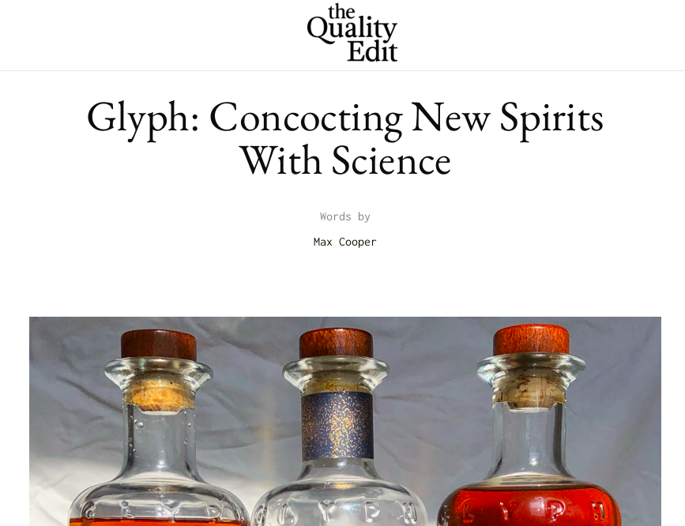

{kind=link}
{kind=link}

Thanks so much for taking a look at some of my work.
I thought I'd start off with a few examples of my professional editorial efforts, but please feel free to skip ahead to the extracurriculars.
In my current role as Autograph's Senior Copywriter, I'm proud to serve as the go-to verbal guy for every team at the web3 start-up. Whether I'm crafting campaigns with Marketing, penning taglines with the C-suite, humanizing the UI with Tech, or coining new offerings with Product, I always love helping folks find the words they need to say what they mean. Here's a few more of 'em:
Next up: a Brand Voice project for a DTC jeweler that was undergoing a complete rebrand at the time. I served as copywriter on this one, working hand in glove with a strategy team.
Here's some Brand Architecture / Innovation Strategy content I helped create for the beloved beer brand. In collaboration with a research team, we explored customer territories and occasions ("Palate Maps" and "Demand Moments"), and I produced the voices behind each.
When the tonychi studio design firm was undergoing a recent reorganization, I was tapped to lead its Brand Identity & Messaging work, producing the Principles below in anticipation of its new website.
In addition to my work with small, boutique brands, I also partner directly with teams at large institutions to lend a hand with their written efforts. On top of the internal marketing content I create for Citi Ventures, I've helmed UX copy for their external products, and I also serve as the ghost writing one investor's ongoing Forbes column seen below.
I once did a little performance piece at the Whitney Museum, attempting to blend art with artist. Here's me on display, getting viewed by visitors making their way through the space.
This is what they were reading (which I like to think of as a sort of Brand Voice exercise in itself):

It was a wonderful experience.
During the pandemic, a friend of mine launched a site reviewing DTC brands and asked me if I'd like to try out some products and then post my two cents in public. Here's one I wrote about a "molecular whiskey," which definitely put my editorial integrity to the test.
A couple years back, a Parisienne friend asked me to help edit her book of English wordplay. I was proud to see it get published some months ago, and I loved putting my nominal web-development skills to use by transposing it to a digital form.

I really appreciate you taking the time to look over the above. I'd love to chat sometime and hear all about the work you've been tackling at Hims & Hers. Please don't hesitate to get in touch whenever's best for you.
Cheers,
Max